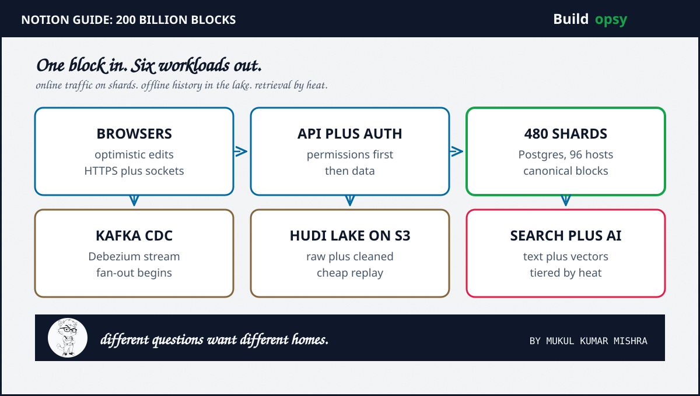

1. How Notion Works in 60 Seconds
A page is a tree of blocks. Text, headings, checkboxes, database rows, relations, child pages: every one is a block with identity plus parentage plus ordering plus permissions plus history. Change one word and the system may update the canonical row, publish a change event, refresh search, rebuild a permission path, refresh a cache plus regenerate an embedding.
Notion grew that model from roughly 20 billion blocks in 2021 to more than 200 billion by 2024, serving over 100 million users at an $11 billion valuation. The architecture that survived is a study in separation: online traffic on sharded Postgres, offline history in a lake, retrieval in search plus vector tiers, each priced on its own terms.
2. The Components of Notion Architecture
Browser clients edit optimistically over HTTPS plus WebSockets. An API layer checks workspace membership plus permissions before touching data. 480 Postgres shards hold canonical blocks with WAL-backed transactions. Caches absorb hot reads. Object storage keeps images plus attachments. CDC turns WAL records into Kafka traffic through Debezium. Hudi on S3 lands durable lake copies for Spark jobs. A search index serves denormalized text. A vector tier serves embeddings at hot, warm plus cold prices. An AI path retrieves, reranks, infers plus streams.
Each copy exists because forcing one store to do everything would be worse. The online path needs predictable latency. The lake needs cheap replay. Search needs text. AI needs chunks. Different questions, different homes.
3. Why 480 Postgres Shards
By 2023 Notion ran 96 physical Postgres instances with five logical shards on each, preserving 480 logical shards. Sharding follows tenant-shaped units, so unrelated workspaces never share a lock. That ended the single-database era.
It also imposed a permanent tax. Routing, migrations, backups, rebalancing, schema changes, CDC fan-in plus operational tooling all multiply by the shard count. Sharding is not a victory. It is a trade: bounded blast radius in exchange for multiplied operations. Any team copying this shape should budget the tax before celebrating the isolation.
4. The CDC Data Lake: Kafka Between Postgres and Everything
The first lake design used Fivetran connectors from Postgres WAL into Snowflake: 480 connectors, update-heavy block data plus expensive tree-traversal transforms. Roughly 90 percent of block upserts are updates, not inserts. Warehouses prefer append-only streams. The shape fought the tool.
The redesign streams incremental changes through Debezium plus Kafka, lands them in S3 with Apache Hudi plus processes raw data separately from cleaned data. S3 becomes the durable truth for offline work. Spark computes on schedule, including on spot capacity: Notion reports its Spot Balancer cut Spark compute costs by 60 to 90 percent across workloads. Snowflake plus product stores receive only curated data.
5. Vector Search: From Millions a Year to 90 Percent Less
The first vector architecture bundled storage plus compute into pods. Fast, familiar plus dangerous: capacity gets purchased for the peak while most workspaces sleep. A quiet index still occupies a machine. Notion says the old design reached a cost run rate in the millions per year.
The fix decoupled vector storage from compute in a serverless design, good for an immediate 50 percent cut from peak usage. Later work tiered hot, warm plus cold indexes, cut search-engine spend 60 percent, cut EMR compute 35 percent plus shrank indexed volume 70 percent. Total reduction landed near 90 percent over two years. The lesson is matching cost ownership to access patterns, not declaring any single hosting model the winner.
6. Scale Math and the Bill
A transparent scenario: 10 million daily users at 20 minutes each, one request every ten seconds, gives 13,900 average RPS. An eight-times busy hour pushes the design target to 100,000 RPS. Writes run near 694 per second on average with peaks near 5,600. AI adds 100,000 requests a day whose token bill can dominate the database bill at barely 1 request per second.
The modeled envelope lands near $975,000 to $2.2M per month: sharded database estate, lake plus batch compute, search plus vectors, edge plus egress, AI inference. At the 1M RPS stress test, an unoptimized origin bills about $5.18M per month while edge caching plus coalescing plus tiering cut it to about $768k. Run your own throughput against the RPS envelope calculator. Full tables live in the deep postmortem.
| Workload | Scenario | Result |
|---|---|---|
| Daily users | 10 percent of 100M | 10M DAU |
| API traffic | 1 request per 10 sec | 13.9k avg RPS |
| Peak traffic | 8x average | ~100k RPS |
| Block writes | 6 per user per day | 694 per sec avg |
| Monthly envelope | Modeled platform | $975k to $2.2M |
7. The Verdict: What to Steal
Steal the separation first. Online traffic, offline history, search text, vector retrieval: four questions, four homes, each priced on its own terms. Most cost disasters I price are one store forced to answer every question badly.
Steal the temperature discipline next. Hot, warm, cold: measure separately, pay separately. Never let a million sleeping workspaces masquerade as a million hot applications. Steal the interruptibility last. Batch that can wait should never pay on-demand prices.
Do not steal the shard count. 480 shards is Notion's answer to Notion's shape. What transfers is the question they kept asking: what did this one innocent block just make the system do? Ask it about every feature before the feature ships. Then the bill stays a budget instead of becoming an incident.
8. Frequently Asked Questions
What database does Notion use?
PostgreSQL. Notion runs 96 physical instances holding 480 logical shards as the transactional source of truth, with caches, search, lake plus vector tiers beside it.
How does Notion scale to 200 billion blocks?
Tenant-shaped Postgres sharding carries online traffic while a CDC pipeline through Debezium, Kafka, Hudi plus S3 feeds search, analytics plus AI from separate materialized copies.
Why did Notion build a data lake instead of querying Postgres?
Online traffic needs predictable latency plus transactional permissions, while analytics needs cheap replayable history plus AI needs chunks plus embeddings. One store cannot serve all four without hurting each.
How did Notion cut vector search costs?
By decoupling vector storage from compute in a serverless design, tiering hot, warm plus cold indexes separately plus shrinking indexed volume. Notion reports roughly 90 percent lower cost over two years.
Sources and Method
Architecture facts come from Notion engineering plus company posts. Workload and cost figures are the labeled scenario model from the companion teardown, not Notion disclosures. For the complete tables, see the full postmortem.